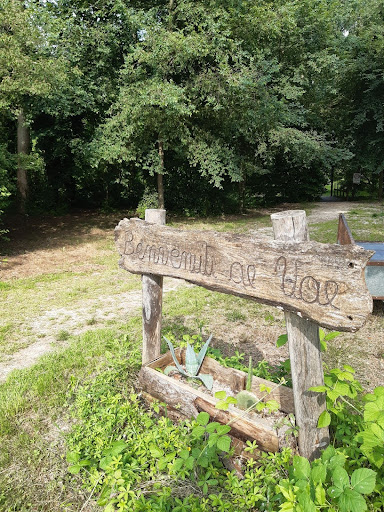

Le “Vae” sono un’area naturalistica, situata nella frazione di Campretto di San Martino di Lupari. Nasce nel 2016, per volere della comunità del luogo. La sua storia è millenaria, perché esistono documenti comprovanti la costruzione di un Castello in questo sito, risalenti a prima dell’anno 1000 d.C. Il castello, di proprietà del Vescovado di Treviso, fu espugnato dai Da Camposampiero intorno alla metà del 1100 d.C. Esiste anche una leggenda sulla sepoltura in loco di una “spada d’oro” che il vescovo avrebbe seppellito in occasione delle battaglie, anche giudiziarie, che sono avvenute per tornare a controllare il possedimento che era stato indebitamente sottratto dalla famiglia nobile di Camposampiero. Fu invece con l’avvento di Ezzelino da Romano che il castello fu definitivamente distrutto. Durante il Medioevo, la zona viene percorsa da una strada (attuale via Vecchia), dove sorgeva un Monastero con un abate (attuale località Monastiero) che portava da Nord a Sud i pellegrini verso Padova e poi verso Roma. Si ipotizza, senza averne certezza, che facesse parte di un ramo della strada della Claudia Augusta, che è andata in parte cancellata dall’attività antropica. Attualmente si sviluppa con un’oasi attraversata da corsi d’acqua e boschetti di roveri, ontani e olmi. La zona è umida e si trova al confine superiore della fascia di risorgiva della sinistra Brenta. Dai “fontanassi”, fontanili naturali che emettono in superficie acqua di risorgiva, fuoriesce acqua a temperatura costante, che si incanala nel Rio Valdiera e nel Rio Vandura, affluenti del Brenta. E’ possibile sostare al “Parco Le Vae”, contattando i recapiti che si trovano all’ingresso del percorso, nell’area del sito stesso.
